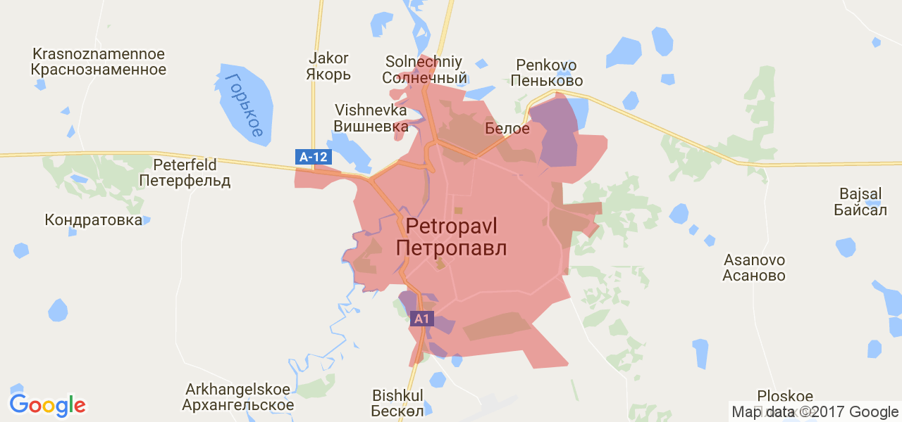

Petropavl
General Information
- Location: Kazakhstan, North Kazakhstan region
- Population: 19 445 people
- Area: 221.6 square km
History
1752: Petropavl was founded in the summer of 1752 as a military fortress of Saint Peter. Initially, it was considered a military outpost and was a major trading center in the North of the Kazakh khanate.
1918: Petropavlovsk became one of the centers of the white movement where the Soviet government was overthrown.
1919: Soviet power was restored in the city.
1941: The great Patriotic war began in the USSR.
1991: Kazakhstan gained independence and Petropavlovsk stayed as the center of North Kazakhstan region.
Population
Click here to learn more about people in Petropavl!
